Searchable 🔠Instagram Recipe Collection
About: I find Instagram to be a wonderful site to find and save recipes. Alas, Instagram collections are not searchable, so I made this simple tool to search my personal Instagram recipe collection. The "tried and tested" recipes go to cook.luischav.es
@eatmoreplants.no - Ad. I’ve been using @veri to track my glucose resp Read More...
@eatmoreplants.no - Sometimes you just need to eat an entire cucumber Read More...
@eatmoreplants.no - Instant ramen jars on a monday🜠Add more sriracha Read More...
@eatmoreplants.no - I’m sick, so I’m reposting a few oldies but GOLDIE Read More...
@thefoodietakesflight - Spicy Garlic & Herb Mushroom Foil Bake! Read More...
@nomeatdisco - CHILLI JAM & TOFU RICOTTA FILO PARCEL 🥮 Read More...
@eatmoreplants.no - Ad. I’ve been using the @veri method to educate my Read More...
@eatmoreplants.no - There are moments where you need to eat an entire Read More...
@pierceabernathy - Marinated tomato and watermelon with a clarified v Read More...
@nomeatdisco - SPICY PEANUT NOODLE SOUP 🜠Read More...
@itslizmiu - VEGAN MOZZ IN BRINE Read More...
@eatmoreplants.no - One pot marry me butter beans💠Read More...
@rgveganfood - RASTA PASTA Read More...
@itslizmiu - CREAMY LEEK & POTATO BAKE MEAL PREP 🥔 Read More...
@nomeatdisco - JALEPENO HONEY AUBERGINE SCHNITZEL WITH A THAI SAL Read More...
@itslizmiu - I know it’s only April but this year has been the Read More...
@itslizmiu - 5-MINUTE CASHEW ROMESCO SAUCE 🫑 Read More...
@nomeatdisco - JERK MUSHROOM STEAK TACOS 🌮 Read More...
@thefoodietakesflight - Miso Orzo with Gochujang Chickpeas and Teriyaki Mu Read More...
@itslizmiu - KIMCHI CARBONARA 🤠(not actually carbonara at all) Read More...
@nomeatdisco - TOM KHA GAI - THAI COCONUT SOUP 🥣 Read More...
@rgveganfood - BRUNCH Read More...
@allplants - 4-ingredient Pistachio Ice Cream âï¸ Read More...
@eatwithafia - Spicy tamarind mocktail with mint and a spicy rim Read More...
@plantcrazii - I’m excited about sharing this High Protein Pistac Read More...
@eatwithafia - Cool down this summer with some of my favourite an Read More...
@crowded_kitchen - MANGO LIME SORBET ğŸ¥ğŸ¨ Island way sorbet who?? Make Read More...
@zaccharybird - TEMPE KECAP! If you’ve never enjoyed tempeh before Read More...
@abclifestyle - Homemade Garlic and Sesame Chilli Crisp to put on Read More...- 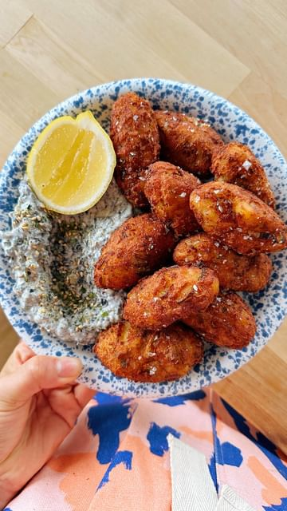
@itslizmiu - Portuguese Saltcod Fritters 🇵🇹🐟Bolinhos/Pasteis de Read More... 
@itslizmiu - Portuguese Tomato Rice (Arroz de Tomate) 🅠Inspire Read More...
@fitgreenmind - SHREDDED TOFU TACOS 🌮 Read More...
@the.undisputable.vegans - ğŸ¥Â Mangum Read More...
@primal_gourmet - Blackened Snapper with Mango Salsa… easy, healthy Read More...
@pierceabernathy - Greens are everywhere at the market and I’ve been Read More...
@carolinagelen - Follow @carolinagelen for more recipes Read More...
@carolinagelen - follow @carolinagelen for more recipes Read More...
@carolinagelen - follow @carolinagelen for more recipes Read More...
@thefoodietakesflight - Garlic Pepper Tofu! 🥢 Read More...
@vegandemocracy - EAT OR PASS?? 😠Read More...
@thefoodietakesflight - Pan-Fried Scallion & Sesame Buns for all the amazi Read More...- 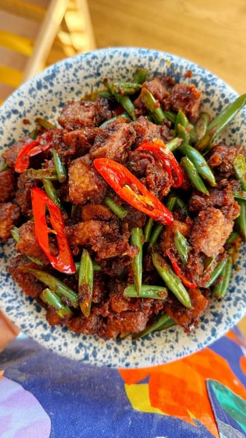
@abclifestyle - SAMBAL GORENG TEMPE(H) by @itslizmiu 🇮🇩 If you don Read More...
@jensplantbase - Chick’n & Plantain Waffles - a plant based-alterna Read More...
@veganezer - 🇳🇬 Efo Riro 🇳🇬 Read More...
@plantyou - 💕🥰🥕VEGAN OVERNIGHT OAT BUNS by @plantyou inspired Read More...
@thefoodietakesflight - My fav way to eat veggies are in the form of panca Read More...
@eatwithafia - What I eat in a day as a vegan who enjoys food fro Read More...- 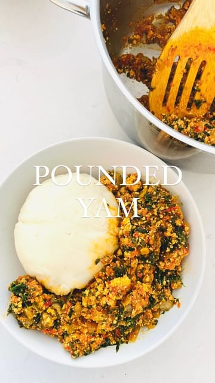
@eatwithafia - How to make pounded yam in a food processor Read More... 
@pierceabernathy - Homemade Pici with Calabrian Chile Squash Sauce. A Read More...
@nomeatdisco - PERUVIAN TOFU RICE BOWL 🗠Read More...
@allplants - There’s always room for dessert, especially on #St Read More...
@eatwithafia - ✨Tatale✨ is one of the best ways to use over ripe Read More...
@bengingi - Armenian Matnakash 🇦🇲 Read More...
@thefoodietakesflight - Can’t go wrong with a bowl of 🜠Read More...
@eatwithafia - Ivorian friends, please let me know how I did?? Read More...
@itslizmiu - PEACHY PANZANELLA SALAD 🍅🥖 COZ BREAD SALAD IS THE Read More...
@thefoodietakesflight - Starting off February with my fav Korean vegetable Read More...
@itslizmiu - KILLER SALT AND PEPPER TOFU! 🔪 CRISPY on the outsi Read More...
@allplants - Have major FOMO on #WorldNutellaDay? Let’s make ✨v Read More...
@itslizmiu - 20 MIN TERIYAKI TOFU 👩🏻‍🍳 Such an excellent one fo Read More...
@thefoodietakesflight - Soy Sauce Udon - might just be the easiest bowl of Read More...
@thefoodietakesflight - Mango Sticky Rice, but make it pink 💗🥠Read More...
@carolinagelen - ORANGE CARDAMOM OLIVE OIL CAKE - this upside down Read More...
@carolinagelen - BEANS ALLA VODKA, just like penne alla vodka, but Read More...
@carolinagelen - THE ULTIMATE COMFORT FOOD : creamy polenta with a Read More...
@itslizmiu - PEKING TOFFEE APPLES ğŸ These Chinese-style Toffee Read More...
@thefoodietakesflight - This is a light, refreshing, and crisp Chinese cuc Read More...- 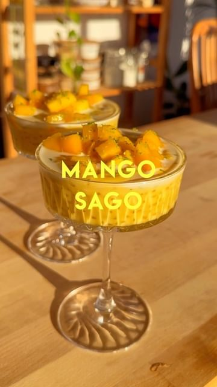
@itslizmiu - MANGO SAGO 🥠the perfect summer dessert! It’s refr Read More...
@thefoodietakesflight - Filipino Style Tofu Curry 🛠best enjoyed w heap lo Read More...
@nomeatdisco - TOFU RAGU ğŸ Read More...
@pierceabernathy - Cacio e Pepe inspired spaghetti squash dip. In thi Read More...
@itslizmiu - Korean Vegan Fried Shrimp Toast 멘보샤 by @itslizmiu Read More...
@nomeatdisco - HOMEMADE VEGAN KIMCHI 🥬 Read More...
@thefoodietakesflight - This one’s for my fellow garlic and gochujang-love Read More...
@itslizmiu - Charred broccolini, crispy beans on whipped tofu r Read More...
@thefoodietakesflight - Tofu balls - reposting since IG removed my audio 😬 Read More...
@carolinagelen - follow @carolinagelen for more recipes Read More...
@thefoodietakesflight - Maple Hoisin Tempeh using @lightlifelifefoods orig Read More...
@thefoodietakesflight - Wood Ear Mushroom Salad 🍄🥗 Read More...
@carolinagelen - follow @carolinagelen for more recipes Read More...
@thefrenchiegardener - How to grow your own Ginger at home 🌱💚 Read More...
@rachelama_ - JERK WRAPS WITH SWEET FRIED PLANTAIN🌱 Read More...
@eatwithafia - We are making Ugandan Rolex for breakfast today. A Read More...
@thefoodietakesflight - Filipino Style Tofu Steak (with lotsa onions of co Read More...
@okonomikitchen - Miso Balls å‘³å™Œç‰ (Miso-dama) ⣠Read More...
@thefoodietakesflight - Warm hugs for you all 🤗🜠Read More...- 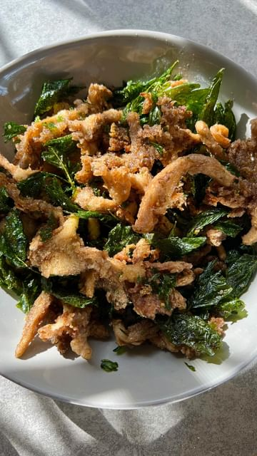
@thefoodietakesflight - Taiwanese-Style Popcorn Mushrooms with fried basil Read More... 
@eatwithafia - How to make okra stew🇬🇠everyone makes their versi Read More...
@thefoodietakesflight - Quarter of a century today ✌ğŸ¼ğŸ–🼠Read More...
@allplants - The star of the show 🌟 Read More...
@thefoodietakesflight - Scalloped Potatoes with a Creamy Lemon Dill Sauce Read More...
@jacobking - VEGAN PRAWN TOAST ğŸ¤written recipe below 👇🾠Read More...
@nomeatdisco - SALTED CARAMEL APPLE TARTE TATIN 🥧 Read More...- 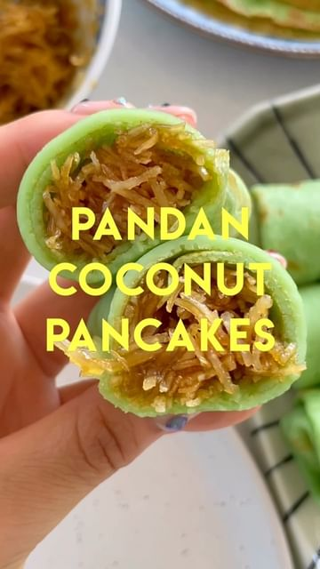
@itslizmiu - PANDAN COCONUT PANCAKES or KUIH DADAR GULUNG (KETA Read More... 
@plantyou - 🤯💕🥬SMASHED BRUSSELS by @PLANTYOU. RECIPE for the s Read More...
@jacobking - CARROT + HARISSA DIP 🥕 full written recipe below 👇 Read More...
@thefoodietakesflight - 🌽🥣, anyone? Get the recipe on my blog www.thefoodi Read More...
@jacobking - VEGAN CALAMARI 🦑 written recipe below 👇🾠Read More...
@thefoodietakesflight - Tofu Giniling - Filipino Style Picadillo! Read More...
@jacobking - (crispy + salty) ROAST POTATOES 🧂🥔 written recipe Read More...
@thefoodietakesflight - Pls share your go-to 🆠recipes or ways to enjoy it Read More...
@nomeatdisco - MISO PARSNIPS WITH PEA & BUTTER BEAN PURÉE 🥕 Read More...
@nomeatdisco - DECONSTRUCTED BÀNH MI TOASTIE 🥪 Read More...
@thefoodietakesflight - A simple yet really tasty Green Bean and Mushroom Read More...- 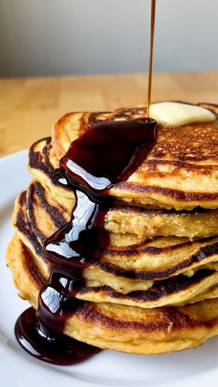
@pierceabernathy - Super Fluffy Squash pancakes with ginger-date syru Read More... 
@healthygirlkitchen - bookmark how to make VEGAN SCRAMBLED EGGS using pu Read More...
@jacobking - AUTUMN (🇬🇧) FALL (🇺🇸) SALAD 🥶🥗 a warming, filling Read More...
@thefoodietakesflight - This easy baked tofu is marinated overnight in a s Read More...
@plantboiis - ad | Amazon Fresh challenged 3 of the plantboiis t Read More...
@jacobking - CHARRED CORN PASTA 🌽 the combination you never kne Read More...
@jacobking - KOREAN FRIED CHICK’N 🇰🇷 my take on a Korean classi Read More...
@thefoodietakesflight - Vegan Tom Yum Soup 🥣 Read More...
@eatwithafia - I partnered with @MetroOntario to share a simple l Read More...
@jacobking - MULLIGATAWNY SOUP 🇮🇳 a delicious South Indian soup Read More...
@pierceabernathy - I got lost in the sauce with this whole braised ca Read More...
@thefoodietakesflight - This harvest was a year and a half in the making. Read More...
@eatwithafia - Make your chocolate dessert taste more chocolatey Read More...
@thefoodietakesflight - Vegan Butter Chickpeas 🫶🼠Read More...
@eatwithafia - Recipe below! Read More...
@jacobking - VEGAN EGG FRIED RICE 🥚 make it with your next Chin Read More...
@eatwithafia - The easiest gingerbread cookies you will ever make Read More...
@thefoodietakesflight - 🥔 salad, my way! The full detailed recipe is up on Read More...
@jacobking - PERI PERI CHICK’N + RICE📠doing up Nandos at home Read More...
@eatwithafia - ‼️The most important recipe to master for Ghanaian Read More...
@pierceabernathy - Tahina rolls! Many variations of these rolls are p Read More...
@pierceabernathy - It’s almost November and there’s somehow still pep Read More...
@vegan_govegan - 🥶Why you should be freezing your tofu…and how to m Read More...- 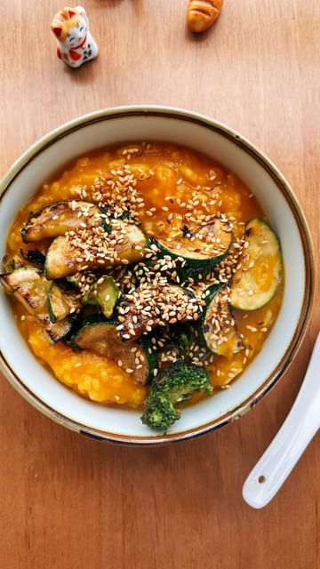
@itslizmiu - Pumpkin porridge 🃠this was brekky with whatever w Read More... 
@maxlamanna - 🍌👵🏼Chocolate Banana Bread Read More...
@vivolife - Protein packed pancakes in 10 minutes flat! 🥠Read More...
@pierceabernathy - Celeriac steaks with celery leaf salad. I find the Read More...
@itslizmiu - 2 INGREDIENT KIMCHI PANCAKES 🔥 Crispy, moreish, sa Read More...
@thefoodietakesflight - Silken Tofu with Black Bean Mushroom Sauce - full Read More...
@nomeatdisco - CRISPY ZINGY VEGAN HONEY GINGER TOFU CUPS 🥬 Read More...
@healthygirlkitchen - Did you know you can turn pumpkin seeds into PUMPK Read More...
@pierceabernathy - Sweet Potato, peppers and cucumber with corn-infus Read More...
@nomeatdisco - 5 MINUTE GOCHUJANG NOODLES 🜠Read More...
@eatchofood - Spicy Salmon Onigiri 🙠my favorite thing to make w Read More...- 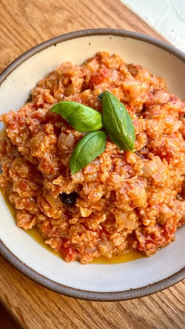
@pierceabernathy - While traveling in Italy recently I ate Pappa al P Read More... 
@thefoodietakesflight - Pan-Fried Tofu with Chili Miso Sauce Read More...
@plasticfreeherbivore - SATAY BAKED TOFU 🌱 Read More...
@ryannordheimer - PEACH PIE ğŸ‘🥧🌠Read More...
@architlost - Not a recipe but a magic trick! This 2 ingredient Read More...
@veganezer - Bang 2 da bang crispy fried “chick’n†mushrooms Read More...
@saltnpepperhere - trust me, this sweet corn mochi cake is a must-mak Read More...
@thefoodietakesflight - Pan-Fried Scallion & Sesame Buns - light and fluf Read More...
@dadaeats - THE BEST NO-BAKE DESSERT… Read More...
@jacobking - VEGAN TANTANMEN 🜠a Japanese inspired creamy ramen Read More...
@thefoodietakesflight - One-Pot Rice Cooker Meal 🚠- perfect for those bus Read More...
@nomeatdisco - CAJUN ORANGE TOFU LOLLIPOPS 🊠ğŸ Read More...
@allplants - With another hot week on the horizon, it's time fo Read More...
@glowdiaries___ - Would you try bang bang cauliflower?! Recipe below Read More...
@allplants - You’ll be heatwave ready with this no churn pistac Read More...
@nomeatdisco - THE CREAMIEST HUMMUS EVER WITH HARISSA JACKFRUIT 🫘 Read More...
@kwokspots - Who doesn’t like some good buns 🥵 Read More...
@travelandmunchies - Buss Up Shut! I have shared this before but here i Read More...
@iankewks - Mango sticky rice is a delicious tropical dessert Read More...
@itslizmiu - GRAB YOUR BESTIE! WE’RE EXPLORING VEGAN FOOD IN BA Read More...
@allplants - ⁠ Val's no-churn cookies and cream ice cream is as Read More...
@itslizmiu - BEIGNET BEBOP 🤠VEGAN BEIGNETS WITH SALTED PANDAN Read More...
@itslizmiu - One of my most popular recipes! CREAMY MUSHROOM ST Read More...
@herbifoods - PISTACHIO PESTO PASTA 🌱✨ a super healthy & delicio Read More...
@carolinagelen - SALT BAKED POTATOES - the butteriest, creamiest po Read More...
@thefoodietakesflight - Filipino Mushroom Tocino with tofu scramble and si Read More...
@veganfeedgram - Do you like eggplants? If you do, then take a look Read More...
@herbifoods - ROASTED PEPPER RISOTTO 🌶👨🏼‍🍳 possibly the best ris Read More...
@plantbasedly - YES or NO??? How to start growing cucumbers! 🥒🤩 Tr Read More...
@thefoodietakesflight - My fave Mango Sticky Rice is pink 🎀💗🌸🌺🌷💚#ipanalona Read More...
@plantyou - 🌸 💕✨WOULD YOU TRY THIS PINK PASTA?! BY @plantyou. Read More...
@veganmeal_recipe - A classic but a good one! Read More...
@brotundsauerteig - Flowers power. Read More...
@itslizmiu - The Nasi Lemak from last week! 🇲🇾 🚠Fragrant, flav Read More...
@lahbco - PRESERVED LEMONS 🋠are in 🫦 (recipe below) Read More...
@theartyvegan - ⏰RECIPE:VEGAN FLUFFY CINABONS perfect for a Sunday Read More...
@myriadrecipes - ONIGIRAZU aka sushi sandwich 😮‍💨 Read More...
@eatinghealthymag - Roasted Cauliflower Soup by @healthyfitbella_ Read More...
@vegan.tipsvn - "GET The Complete Plant Based Cookbook - Over 100+ Read More...
@lahbco - PUT THIS ON EVERYTHING 🫦 (recipe below) Read More...
@sepps - Korean Fried Tofu 🥡🥢🔥 STICKY + CRISPY Read More...
@foodypopz - Make @rainbowplantlife’s Almond Butter Date Latte Read More...
@veganrecipesideas - No-Bake Choc Raspberry Tarts 🫠by @chloeevegan Read More...
@eatinghealthyfeed - Oatmeal Banana Smoothie🤤 by @bevsbybeverly Read More...
@vegancarnival - These Garlic noodles turned out soo good!! Been tr Read More...
@that.veganbabe - 🎉😍 Fudgy Protein Borwnies with @oatsomeoatmilk 🙌 # Read More...
@healthygirlkitchen - bookmark this VEGAN ONE-POT PASTA ğŸ (15-minute din Read More...
@pierceabernathy - Sunchoke and Porcini pasta. This one is special; a Read More...
@jacobking - VEGAN LEMON CHICK’N 🍋🐓 a tangy Chinese takeaway cl Read More...
@vegan.planvn - ➡️ If you want to go vegan but have no idea where Read More...
@healthygirlkitchen - bookmark this GOLDEN GODDESS SALAD🌞🧡✨episode 11 of Read More...
@herbifoods - VEGAN MAC & CHEESE 🧀🌱 you won’t believe it’s vegan Read More...
@vegan.challenge.club - "GET The Complete Plant Based Cookbook - Over 100+ Read More...
@hermann - A vegan Saag Paneer, with a handful of wild garlic Read More...
@pierceabernathy - Asparagus with butter beans, Meyer lemon, and gree Read More...
@tracesoats - These cookies are a game charger for quick morning Read More...
@avocado_skillet - Buffalo Chickpea Stuffed Sweet Potato ğŸ Read More...
@shelbizleee - Compost = ❤️ Preventing Food Waste = 🥰 Read More...
@herbifoods - CRISPY TOFU NUGGETS 🔥 if you think tofu is boring Read More...
@plantyou - ☕️💕🌱SCRAPPY COOKING: DATE SEED COFFEE. FOLLOW @pla Read More...
@hermann - Ep. 01 Local Kitchen - Chickpea Tofu Read More...
@healthygirlkitchen - bookmark this vegan BROWNIE BAKED OATMEAL 🤎✨follow Read More...
@jacobking - RICE + PEAS 🇯🇲 a Jamaican classic with plenty of f Read More...
@eatinghealthyfeed - ğŸ 🟠CRISPY Sweet Potato Fries! by @theflexibledieti Read More...
@jacobking - KUNG PAO TOFU 🥡 sweet, tangy + will leave your ton Read More...
@rootedinspice - mashing eggplants 🤠every country Read More...
@plantyou - ☀️🔥💕SPICY GINGER WELLNESS SHOTS by @PLANTYOU! Did Read More...
@that.veganbabe - Let’s make COOKIE DOUGH Nice Cream 🍪🍌 with the hel Read More...
@foodsbible - Ratatouille 👀😋 Read More...
@healthygirlkitchen - bookmark this vegan ONE-POT CREAMY MUSHROOM RICE 🚠Read More...
@eatinghealthymag - bookmark this vegan mango mama salad 🥠(with cream Read More...
@herbifoods - VEGAN MOZZARELLA 🌱🇮🇹 the best recipe I know! Read More...
@vegan.tips.recipes - Follow us @Smoothie.recipe.21day for more tips and Read More...
@healthygirlkitchen - Save this VEGAN GLUTEN-FREE CARROT CAKE (1-bowl)🥕✨ Read More...
@eatinghealthyfeed - Pasta Salad🥬 The dressing and feta cheese makes th Read More...
@sweatspace - Creamy Avocado Yoast Read More...
@theplantbasedmeal - Pistachio Cake Read More...
@veganrecipesideas - Gnocchi in a creamy white bean alfredo sauce with Read More...
@theegyptianplanteater - GOCHUJANG HUMMUS RIGATONI🍝🌶 Read More...
@fitgreenmind - PUFFY PITA 🥙 Perfect for dipping into tzatziki! 😋 Read More...
@krishaj - I. Want. 💚 Read More...
@itslizmiu - DULCE DE LECHE REPOSTERO VEGANO aka My Friday apol Read More...
@itslizmiu - (AD) Making some THERAPEUTIC CHOC-COVERED DATE CAR Read More...
@ambivertclub - MOMMMM! Read More...
@healthygirlkitchen - You won’t believe this mac & cheese is vegan 🧀✨fol Read More...
@itslizmiu - ALFAJORES! 😋 A very delicious and popular sandwich Read More...
@healthygirlkitchen - Bookmark CHICKPEA CHOCOLATE CHIP COOKIES 🍪✨follow Read More...
@jacobking - CREAMY BEANY DIP 💦 it’s like hummus except it’s ma Read More...
@cj.eats_ - Bok Choy is one of my favorite vegetables and this Read More...
@vegancarnival - Vegan Lotus Biscoff Cheesecake, if you love cookie Read More...- 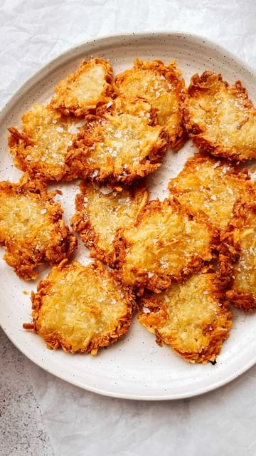
@itslizmiu - VERY CRISPY HASHBROWNS 🥔 I like crispy things and Read More... 
@vernahungrybanana - 📍#asmr // Super easy kimchi pajeon, aka kimchi pan Read More...
@brekkyattiffanys - MISO PASTA (@nytcooking)—> it’s like… so creamyğŸ c Read More...
@jacobking - VEGAN ‘DUCK’ PANCAKES 🦆 except there’s no duck + i Read More...
@brekkyattiffanys - ginger #miso glazed #eggplant (modified recipe fro Read More...
@gregsvegangourmet - Save this for weekend meal inspo! Since you guys l Read More...
@giallozafferano - Voglia di uno spuntino? Cavolo nero trasformato in Read More...
@itslizmiu - Congee or Jook 粥 is just one of the best foods out Read More...
@jacobking - EXTRA GARLICY PASTA 🧄╠this one will hurt your bre Read More...
@jacobking - TERIYAKI BITES 🥡 a sweet + sticky one still 👀 Read More...
@minimin.eats - The classic never fails 🤠Just a regular choccy sp Read More...
@jacobking - VEGAN CEASER SALAD 🌱🥗 using aquafaba as a dressing Read More...
@brekkyattiffanys - 5 minute korean silken tofu!!! kiki’s delivery ser Read More...
@thrivingonplants - Sticky Sesame Soy Cauliflower 😍👏 Battered baked ca Read More...
@veganbowlsrecipes - DAN DAN NOODLES (擔擔麵) #VEGAN.🥢Quite possibly one o Read More...
@justemslife - The tastiest carrot cake recipe!🥕 Read More...
@maxlamanna - Tofu Butter Chicken ◻️🧈🐓 Read More...
@wellmadebykiley - SINGLE-SERVE GRANOLA BUTTER LAVA CAKE (V + GF) Read More...
@cleaneatguide - Don’t Throw Out Pineapple Peels! 🤩🌱 by @creative_e Read More...
@veganrecipesideas - Spicy Eggplant & Miso Tahini Sauce 👌🏻❤️ I topped i Read More...
@itslizmiu - EASY KIMCHI PANCAKES TODAY, FOLKS! ğŸ‘ğŸ¼ğŸ‘🼠Crispy, mo Read More...
@cleaneatguide - 🌱🍪🎉Chickpea Cookie Skillet!! by @that.veganbabe Read More...
@veganfeedgram - Looks yummy! Have you tried making this? Read More...
@deliciouslyella - ingredients Read More...
@callascleaneats - SNICKERS PROTEIN BARS 🍫🥜 Read More...
@plantbasednews - Check out these Mouth Melting Meatless Miso Tofu M Read More...
@themodernnonna - Thank you for 6million 🥂The best strawberry green Read More...
@eatmoreplants.no - Noodle Salad🥗 With a peanut butter, garlic and gin Read More...
@frommybowl - Vegan Orange Olive Oil Cake 🊠This snacking cake i Read More...
@maxlamanna - Super Easy Crêpe, only 5-ingredients Read More...
@veganbowlsrecipes - One Pot 🋠Pasta by @maxlamanna Read More...
@glowvegan__ - ➡️ Get our new vegan cookbook with over 100+ recip Read More...
@rosslynmaria - small-batch peanut butter brownies to satisfy your Read More...
@sovegan - You’ll also find this recipe in our APP and on our Read More...
@chez.jorge - VEGGIE TOFU SOUP 青菜豆腐湯. 🥬 Complex dishes can entic Read More...
@glowvegan__ - Peanut-Miso Chickpea Salad 😋a plant-based sandwich Read More...
@tifflovestofu - Vietnamese-inspired Sate Sauce (aka Lemongrass chi Read More...
@deliciouslyella - Ingredients: Read More...
@veganfeedgram - Sweet Potatoes are the best! Don’t you agree? They Read More...
@bosh.tv - PEANUT BUTTER TOFU CURRY 🛠Read More...
@nourishing.niki - Single-Serve Cinnamon Roll (high protein, vegan) 😠Read More...
@jacobking - VEGAN CARBONARA 🌱🍝 a plant based take in an Italia Read More...
@lissa.elle - ğŸ£ğŸŒ¿ VEGAN SALMON 🌿🣠Read More...
@nourishing.niki - Easy, Health(ish) Blondie Brownies 😠(vegan, glute Read More...
@nomeatdisco - KOREAN TOFU BITES 🜠Read More...
@get.plant.ed - ADDICTIVELY SPICY CUCUMBERS 🥒 This fancy snack by Read More...
@maxlamanna - The perfect dessert for a stay at home date night Read More...
@jacobking - WONTON SOUP 🥟🥣 a delicious way to slurp up some du Read More...
@jacobking - SPAGHETTI AGLIO OLIO 🧄🛢 a classic Italian dish tha Read More...
@jacobking - TOFU BIBIMBAP 🇰🇷🥣 a Korean rice bowl full of flavo Read More...
@maxlamanna - What I Eat For Dinner (most nights) — Tofu Noodle Read More...- 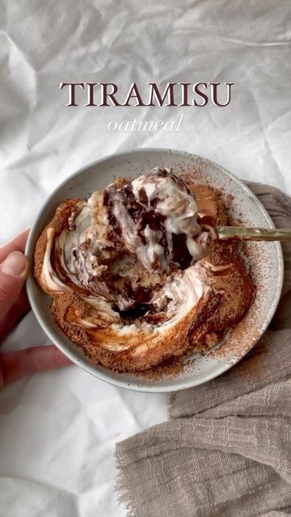
@veganfeedgram - Tiramisu Oatmeal Read More... 
@jacobking - VEGAN KIMCHI 🇰🇷 a classic Korean side dish ğŸ‘🾠WRIT Read More...
@fitgreenmind - MUSHROOM SATAY🥜 Incredibly delicious! 🤗 Read More...
@veganfitrecipes - The simplest vegan rainbow gratin 🤤 Ad | Definitel Read More...
@caloriechat - refreshing ASIAN CUCUMBER SALAD!🥒🥗 a very versatil Read More...
@veganfeedgram - Vegan Lemon Loaf Read More...
@gregsvegangourmet - Fancy French Toast! Save this video and share for Read More...
@veggieanh - Chickpea Tofu (2-ingredient recipe) Read More...
@vegancarnival - 🍫Lentil Brownies! Yes you can put any legume in a Read More...
@healthygirlkitchen - add this vegan lasagna to this weekend’s dinner me Read More...
@jacobking - VEGAN ‘HONEY’ GARLIC WINGS 🍯🧄 delicious + no need Read More...
@poorlondonvegan - Chilli garlic lunchtime noodles ğŸœâ € Read More...
@fitgreenmind - VEGAN BBQ RIBS 🌱😠Super easy, super tasty! 😋 Read More...- 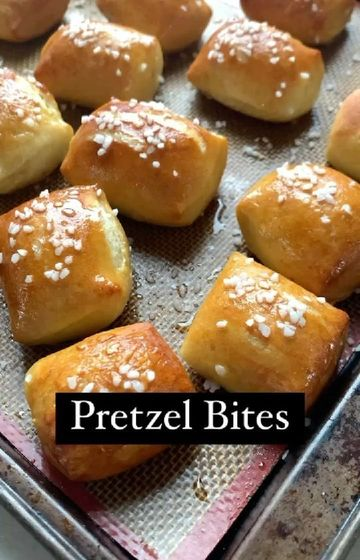
@veganrecipesideas - Pretzel Bites 🥨 by @that.veganbabe Read More... 
@plantbasedvegans - Please Support & Follow 👉 @thecooking.feed Read More...
@the.veganrecipe - Please Support & Follow 👉 @thecooking.feed Read More...
@healthyeatingfeed - Roast Carrot Soup🥕 by @healthyfitbella_ Read More...
@vegan_govegan - You can’t taste the chickpeas at all. You need the Read More...
@veganfeedgram - Lazy noodles ğŸ 5-minute meal here we go! 🤓 by @fit Read More...
@plantbasedrd - Want the flavor to actually get into your tofu? Th Read More...
@that.veganbabe - 🌱🍪🎉Chickpea Cookie Skillet!! Read More...
@jacobking - DAHL & COCONUT RICE 🥥🥥🥥 a delicious curry and rice Read More...
@veganfeedgram - 🌮TACO “MEAT†Read More...
@foodandrefreshments - Homemade fries recipe 🟠Read More...
@veganfeedgram - SPICY GARLIC TOFU 🧄 the recipe that might turn you Read More...
@fitgreenmind - CLASSIC FALAFEL 🧆 The best way to use chickpeas…😋 Read More...
@veganbarrel - 2 INGREDIENT SWEET POTATO TORTILLAS! Read More...
@fitgreenmind - APPLE CINNAMON ROLLS 🍎🥰 The taste of winter…😋 Read More...
@fitgreenmind - SMOKY EGGPLANT DIP 😠Don’t skip the dip guys! 😉 Read More...
@foodypopz - BABA GANOUSH 🍆👀 by @sovegan One of the greatest di Read More...
@veganfeedgram - What I Eat For Dinner (most nights) — Tofu Noodle Read More...
@fitgreenmind - CREAMY MUSHROOM PASTA ğŸ Life is just better with p Read More...- 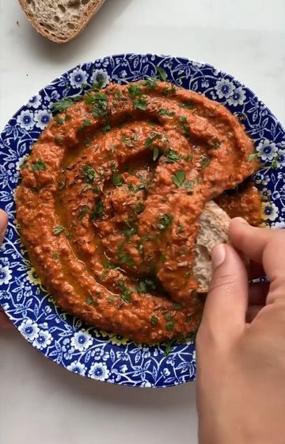
@foodypopz - MUHAMMARA🔥 by @sovegan When we first tried this tr Read More... - 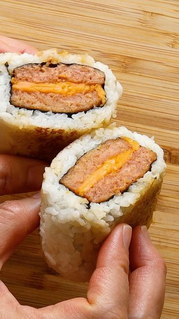
@woon.heng - This Vegan Luncheon Roll🤩 is absolutely TASTY😋 and Read More... 
@wholesomehedonista - Take 5s are slept on Read More...
@foodypopz - HOMEMADE TOFU 😮 by @sovegan We always assumed maki Read More...
@veganfeedgram - BROWNIE BAKED OATMEAL 🫠Aka. an excuse to eat cake Read More...
@veganfeedgram - 🍌No-waste Banana Bread by @maxlamanna Read More...
@bestfruitvideos - APPLE ROSE TARTE TATIN - all you need for this lux Read More...
@vegancommunity - Pistachio Pesto Pasta by @sovegan! 😋 Read More...
@humormedia_hq - More crispy potatoes! Read More...
@herbifoods - VEGAN BRIOCHE BURGER BUNS 🍔🌱 so soft and delicious Read More...
@vegancarnival - 🔥😍💕EP 6: SCRAPPY COOKING - crispy potato skins. Read More...
@that.veganbabe - 🌱🍝 🫠Sweet Potato Brownies! Read More...
@mattsfitchef - PROTEIN CHOCOLATE CHIP COOKIE FOR ONE🤯 (Vegan & pr Read More...
@woon.heng - Vegan Sesame 'Chicken'😋made from king oyster mushr Read More...
@fu.fighters - + We make soy-free chickpea tofu. Read More...
@veganbarrel - HOMEMADE PICKLES!🥒 Follow @veganbarrel for more ex Read More...
@veganbarrel - Typed up a huge list of all the fall recipes I wan Read More...
@veganbarrel - Homemade Sourdough Focaccia in 30 seconds? Here we Read More...
@veganbarrel - 🌱🎉💪 Easy Red Lentil Lentil Wraps - High Protein!!! Read More...- 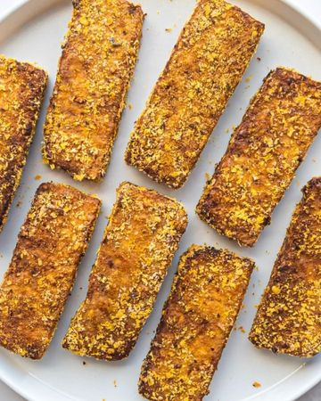
@that.veganbabe - 🙌😠How to Make CRISPY TOFU!!! Read More...
@veganfeedgram - SEARED NAPA CABBAGE with miso butter or SMASHED B Read More...
@veganfeedgram - CHIMICHURRI SMASHED POTATOES 🇦🇷 by @sovegan Golden Read More...
@plant_basedrecipe - TERIYAKI TOFU 😋✨ Tofu is boring? NAAAH! Read More...
@herbifoods - CREAMY VEGAN LEMON PASTA 🋠quick & easy pasta sauc Read More...
@woon.heng - Roti Pisang (Banana) with sweet caramelized banana Read More...
@veganfeedgram - ROASTED RED PEPPER PASTA ğŸ by @sovegan A classic S Read More...
@veganbarrel - Here are 2 healthy recipes to silence your #sweett Read More...
@veganrecipesideas - TERIYAKI MUSHROOM UDON NOODLE STIR-FRY 🜠😠by @run Read More...
@veganfeedgram - EAT or PASS on these VEGAN GYOZAS? 🥟😠by @fitgreen Read More...
@vegancarnival - Vegan Unagi (Eel)ğŸ˜‹ç´ é³—é±¼ with an unbelievable scrumpt Read More...
@fitgreenmind - BABA GANOUSH 😋 Is it better than hummus? 😌 Read More...
@veganfeedgram - These crispy Rice Paper Dumplings have become my n Read More...
@rabbitandwolves - This #vegan Creamy Polenta and Red Wine Mushrooms Read More...
@veganpopping - idk how you feelin about this whole monday thing r Read More...
@rabbitandwolves - This #vegan and #glutenfree General Tso’s broccoli Read More...
@pbnfood - Do you struggle to make your tofu taste delicious? Read More...
@pbnfood - Check out these delicious chocolate fudge cookies Read More...
@theguthealthmd - You scream, I scream we all scream for NICE CREAM! Read More...
@pbnfood - Are you a nut-butter fan? Then you will LOVE this Read More...
@pbnfood - Do you miss omelettes on a plant-based diet? Then Read More...
@happyskinkitchen - Happy Friday everyone!🎉A weekend brunch is always Read More...
@nutrition_facts_org - Here’s a delicious way to start the day tomorrow! Read More...
@annelinawaller - Yeees guys we made it, it's weekend <3. What are y Read More...
@pbnfood - Don’t miss out on a delicious centrepiece this Chr Read More...
@pbnfood - Homemade sweet potato gnocchi with fried chestnut Read More...- 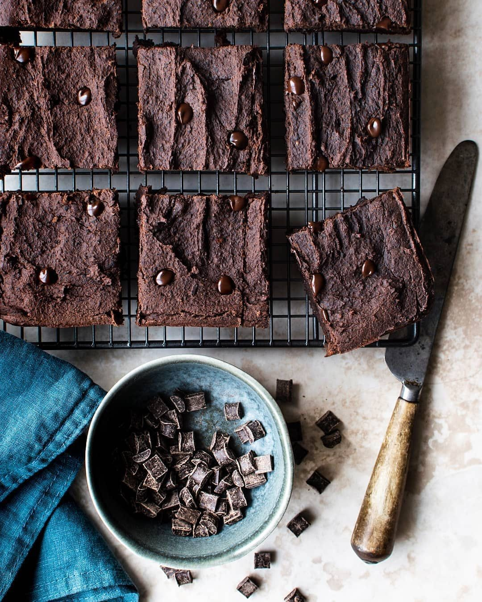
@pbnfood - Do you like tahini, chocolate, and brownies?...the Read More... 
@pbnfood - Cinnamon rolls filled with plant-based Nutella any Read More...
@bakeritablog - Is it time for Christmas cookies yet?! If so...let Read More...- 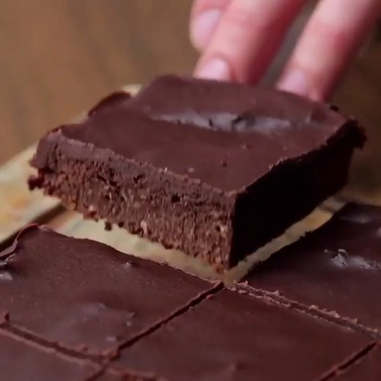
@megunprocessed - Sweet Potato Brownies 😠Read More...
@nimai_delgado - 🤤Smash or pass? Read More...- 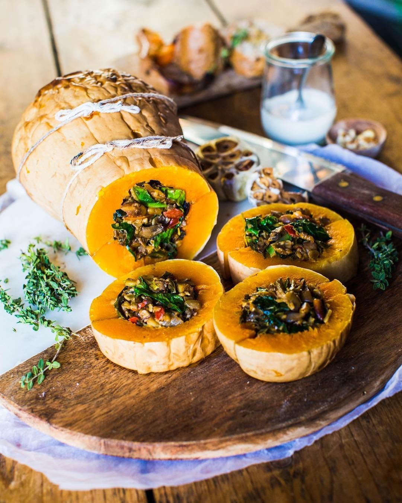
@pbnfood - Check out this delicious baked butternut squash st Read More... 
@everyday.vegan.food - Orange tofu! 🔥🙌🼠It’s so good that I’m not ashamed Read More...
@the_balanced_kitchen - BLACK BEAN, TAHINI & MOLASSES CHOCOLATE BROWNIES Read More...
@pbnfood - Check out these chocolate filled choc-chip cookies Read More...
@pbnfood - Check out this high protein tempeh, pesto and butt Read More...
@pbnfood - Check out this plant based take on traditional mac Read More...
@pbnfood - Fancy an impressive dessert this weekend? These t Read More...
@pbnfood - Check out these superfood cocoa fudge bites! The p Read More...
@everyday.vegan.food - Ginger #Tempeh Bowl! 🥒😠Add rice or quinoa and a s Read More...
@bakeritablog - I don’t know about you guys, but I need to reset w Read More...
@pbnfood - Check out this butternut squash ravioli! A perfect Read More...
@pbnfood - It’s officially the Christmas season, and what bet Read More...